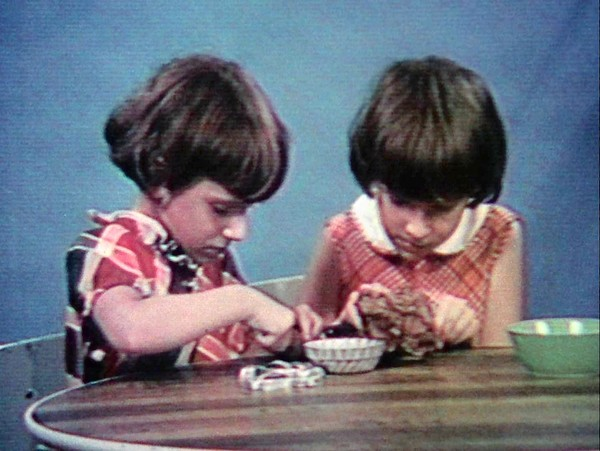

-
Found in Translation: Jean-Pierre Gorin on DVD
by Colin Beckett April 19, 2012
“You can only be a foreigner in a language other than your own.” These are the first words spoken in Poto and Cabengo (1980), the first film in the unofficial trilogy Jean-Pierre Gorin made in Southern California between 1980 and 1992, which the Criterion Collection has released as a box set under the name Three Popular Films by Jean-Pierre Gorin.
Gorin’s opening salvo refers, we find out, to the film’s subjects — Grace and Virginia Kennedy, twin girls whose supposedly private language created a brief human-interest media flurry in 1978 — and also to the sociolinguistic threads woven throughout the entire trilogy. The filmmaker’s laconic, cocksure delivery obscures the controversial nature of his assertion, cloaking its conceptual density in easygoing charm. In doing so, Gorin settles into the back-and-forth momentum that shapes the whole series: Gorin is always coasting forward on an unelaborated principle to see where it takes him, only to return, draw his theories out, and interrogate his own beliefs with a sharp critical intelligence. The rest of Poto and Cabengo explores the complexity of the basic question Gorin’s initial remark elides: what language can the Kennedy twins call their own?
Grace and Ginny’s quick, involute diction contrasts with Gorin’s slow, measured expressions, providing the basis for a richly polyrhythmic sound design. Gorin transcribes the girls’ unusual utterances in onscreen text (the film’s title refers to the girls’ names for one another), leaving it static or animating it into horizontal motion, inventing a whole range of filmic punctuation marks that organize the misleadingly casual, responsive images captured by cinematographer Les Blank. Gorin stops and starts these images too, freezing them without halting the barrage of unusual phonemes raining from the Kennedys’ mouths; winding back the images and replaying them; weaving together multiple forms of onscreen text; giving the visuals the same kind of velocity that characterizes the sounds.
Two-thirds of the way through the film Gorin confirms what his audience has expected from the beginning: the girls’ language is neither private nor invented out of whole cloth but rather mashed together in a dense compound from the competing verbal models available to them. It is an idioglossia — the widely-observed phenomenon of twin language — the girls’ bland speech therapists inform us. This does not diminish the charm of their unpredictable patois, which Gorin explores with great wonder, tracking down every contribution to its morphology: the heavy Southern drawl of their Georgian father, their German-born mother’s frequent malapropisms, and the consonant-soaked German spoken by their grandmother, the girls’ non-English-speaking primary caretaker. As the film progresses, we see their language modified by other influences, its course corrected by the standard American dialect of their speech therapists, and then knocked off it occasionally by Gorin’s nasal, lowing voice.
Gorin’s concerns are not solely linguistic. Poto and Cabengo reaffirms the essentially social nature of language in order to explore the society whose rules Grace and Ginny’s speech must eventually abide by. Gorin’s attention hews closely to the local, and here he etches with tawdry mise-en-scène the Kennedys’ 1970s lower middle class California milieu. He evokes the relatively modest aspirations that brought Tom and Christine Kennedy westward, identifying these aspirations with their pathetic amenability to the tabloid inquires about their daughters.
But while he is focused on the story’s regional particularities, Gorin makes frequent glances toward the larger psychic and geographic space that contains them: the United States of the late 1970s, gurgling with the death rattle of the old New Deal promises. The Kennedy girls’ pidgin English is a living trace — in a film obsessed with traces — of their parents’ unrealized, perhaps now unrealizable, hopes.
In My Crasy Life (1992), the final installment of his California trilogy, Gorin ventures to South Central L.A. to discover another group of children born to American dreamers: Samoan gang members who, like the Kennedys, are bound together by a language that cordons them off from everyone else. It is not Samoan, which few of them speak, but the street slang whose minute variations seem capable of pinpointing a speaker’s territory to the block. “Say you didn’t grow up on the streets, say you had a good, legitimate job” one gangster poses as an alternate reality to another, “what if you didn’t know no slang?” Even the ur-American model train enthusiasts Gorin captures in Routine Pleasures (1986), the second film in the trilogy, are isolated from the country they are supposed to symbolize by their unusual vocabulary, the technical jargon of the railroads. It is only when Gorin is able to trade the names of specific engine models and track gradients with the Pacific Beach & Western crew that he thinks he might be able to pass for one of them. Casting himself as the foreign interloper, he is reprising and intensifying the same role he played in Poto and Cabengo, whose opening lines he speaks in an unmistakable, droll and drawled, French-accented English, thus instantly identifying himself with his questionably American subjects, and setting into motion the interaction between documenter and documented that runs throughout the series. Routine Pleasures just removes the third term, putting him in direct relation to the railroad hobbyists and the film’s other through-line, another representative ur-American: Manny Farber, film critic, painter, and high school football star of Douglas, Arizona.
It was Farber who brought Gorin to the United States in the first place, luring him from France, where he had been making films with Jean-Luc Godard and the Dziga Vertov Group, to teach in the visual arts program at UC San Diego. Farber and Gorin had met in 1972, when Gorin was still working with Godard, and Farber was writing with a vitality renewed by the European art cinema of the early ‘70s that, like his criticism, drew on both old Hollywood and Modernist painting and sculpture. By the time of Routine Pleasures, Farber had given up film criticism to concentrate on his painting, which had become increasingly concerned with the cinema he used to write about. In each of his “auteur paintings”, Farber reproduced iconography from the work of his favorite directors, in oils, and scattered it across flat, tabletop-like surfaces, each element related in what Gorin in Routine Pleasures calls “an ever-shifting bird’s-eye view.” Except for a few black and white photographs, Farber himself does not appear on camera. Gorin instead returns frequently to two of his paintings: Have A Chew On Me (1982), a piece inspired by William Wellman, and the autobiographical Birthplace: Douglas, Ariz. (1979). These paintings’ vivid and fragmented Americana fill the tight compositions of cinematographer Babette Mangolte, whose patient, controlled style evokes the European pole of Gorin’s sensibility where Blank’s vernacular rhythms in Poto and Cabengo had underscored his American longings.
The horizontal sprawl displayed in Farber’s paintings explodes the precise, concentric ordering of the miniature models erected by the railroad hobbyists who comprise the other half of Routine Pleasures. Promising to deliver “a small-scale epic. America under budget and in a shoebox,” Gorin presents a fantasy America not so distant from the hobbyists’ own — taking them, men all at least a generation younger than Farber, for the kind of happily engaged, close-knit professional grouping that filled out the 1930s action movies that the critic always liked best. We see it in the mythic mid-century small town of the model, whose imagined comforts stimulate the few moments left for daydreaming in the tight train schedules maintained by men who find “routine at the core of any flight of imagination”. Their counterfeit nostalgia is the kind drawn on by Ronald Reagan, who was well into his second term by the time Routine Pleasures was released. Gorin has called the film an investigation of “the conservative imagination,” and it is fascinating to behold Gorin, an “ex-Marxist” of a very different sort than Irving Kristol, sympathetically align himself with these Reagan Democrats. Through men who use their leisure time to play at the kind of labor one used to get paid for, Gorin measures the distance between a fanciful past and the downbeat present. In a scene early in the film, the camera holds on the Pacific Beach & Western’s model town, taking in the precise ordering of its most minute details. Suddenly, holes open in the set and the hobbyists pop out from underneath, ready to make repairs and alterations, rupturing their fantasy the moment they insert themselves into it. They do not seem to question the bum deal given them by the reality for which their fantasy life provides an alibi. They reduce their expectations, but never stop dreaming. In a film half-dedicated to Flaubert, these men are Emma Bovarys who never resent their Charles, contenting themselves with still more elaborate flights of nostalgic fancy, living exemplars of “the way the world was retreating these days into small-time obsession”.
My Crasy Life is Gorin’s unsensationalized encounter with the hardest-working bogeyman of the 1990s: the urban street gang. Gorin removes himself from the equation here, foregoing the narration that structures the first two films. Instead he collaborates with his subjects — the first- and second-generation Samoan-American young people who make up two Long Beach gangs, the Original Gangsters and the Pee Wees — to stage and observational docudrama. Gorin bankrolls a recording session for their lively but third-rate rap group, and in exchange they reenact representative moments from their daily lives and account for themselves in interviews with one another. Sgt. Jerry Kaono, a Hawaiian-born officer of the LAPD, provides an entryway to their world, taking Gorin and camera for ride-alongs with his partner, an articulate, talking dashboard computer.
Gorin produced all three films for European television, enlisted as part of the dragnet of filmmakers trawling the United States in the 70s and 80s on behalf of networks like ZDF, the BBC, and BRT that hoped to explain the love-hate allure that this big, strange country still exuded. Unlike most of his fellow would-be de Tocquevilles, Gorin was looking for more than a touristic hit-and-run. He came to stay. He kept the job at UCSD, and was even briefly married to Alice Waters, California’s most righteous celebrity chef . It is difficult to square this image of Gorin as the Chez Panisse-dining, comfortably bourgeois professor with that of the leftist-and-formalist revolutionary that Godard had introduced to the film world a little more than a decade prior. But radical self transformation is exactly what he hoped to accomplish in his move to the United States. In an interview recorded many years later, for the Criteron edition of Tout va bien (1972), he explained his American migration with a phrase that echoes the opening line of Poto and Cabengo: “I wanted to move” he said, “to experience myself in a different language”. The old experiential language he refers to is not only the French of his upbringing, but the byzantine dialectical syntax of the Dziga Vertov Group films.
In his intermittently incisive new book, The Essay Film (2011), Timothy Corrigan describes “essayistic subjectivity” as a consciousness that continually redefines itself through the experiences that the essay attests + In Poto and Cabengo and Routine Pleasures, Gorin places his subjectivity at the center, and fully inhabits the role Corrigan outlines, asserting himself in the direct, first-person address that corrals the disparate energies of the film’s digressions. Gorin’s assumption of a self-conscious authorial persona here sharply contrasts with the collaborative direction of the Dziga Vertov Group, a practice that many took for a firm rejection of the privileged position of the auteur that Godard had once helped consecrate. It is tempting to view Gorin’s step into the spotlight as just another way to turn his old priorities against themselves, but for Gorin, the Dziga Vertov Group’s collective structure was never really about authorship. It was, he said in the same Criterion Collection interview cited above, an attempt to channel “the fluid circulation of ideas and practices,” an M.O. that sounds much like the circumfluous movements of the essay film.
Corrigan argues that, “the essayistic indicates a kind of encounter between the self and the public domain, an encounter that measures the limits and possibilities of each as a conceptual activity.” The documentary footage that constitutes the public domain in Gorin’s films functions, at times, independent of the voiceover. The two pass back and forth and through one another, testing the ability of each to withstand the effect of the other. They are not inseparable. Gorin remains warmly engaged with his subjects, but maintains a distance, taking part in their lives while describing them in abstract and sometimes unflattering terms The self-contained integrity of the observational passages is what makes these films documentaries in more than a narrow, legalistic sense. Poto and Cabengo answers the question that appears and reappears onscreen throughout the film — “what are they saying?” — taking an investigative approach to the Kennedy girls’ language, making their speech easier to understand as the film goes on, a strikingly literal way of satisfying documentary’s basic charge to make its subjects intelligible.
The subjects of these films are people and symbols themselves poised precariously between public and private spheres: the “private language” that thrust the Kennedy twins into public life; the “private obsessions” that Routine Pleasures finds, derived from movies and railroads; the personal relationship between semi-public figures Gorin and Farber; and the L.A. gang bangers who spent the early 90s hounded by rivals, reporters, cops, and sociologists. As threatening as public exposure can seem, private sanctuary is no better or, finally, just the same. What is revealed in Routine Pleasures by the comparison between Farber, who availed his fixations to readers and beholders, and the model train crew, whose “obsession had become so private that there was always something else to explore,” is that even the ornery and aloof communicative practice of the former staves off the folly of the latter: the lonesome retreat into an unsociable fetishism. Gorin adopts his essayistic style for this very reason, so that he can insert himself — or rather a public representation of himself — deep into these worlds without losing his grip on the culture at large. He describes the train enthusiasts as lost “in pursuit of the perfect detail,” and he will not be, or not for too long.
So Gorin records his impressions of his models and weaves them into the meta-narrative of his own Americanization, depicting his encounters with these subjects as the experience that resists his elaborate theories about his adopted country. In doing so, he sacrifices fidelity to the precise contours of his obsessions in exchange for the potential to make them widely meaningful. There is a different specter lurking in the big picture: the bloodless sociological generalization that the collaborative strategies of My Crasy Life are designed to avoid. Seeing this danger, Gorin does not enlarge his subjects beyond recognition, but instead, borrowing a solution from Farber’s paintings, he draws them to scale and puts them in close proximity to as many other associations as the film will hold. The result is a bustling, kaleidoscopic image whose elements offer a seemingly infinite number of potential combinations. Gorin leads us through a few of the most suggestive ones, but, in deference to the realities he’s tried to represent, he allows the objects of his fascination to retain an ultimate unknowability that is these films’ true subject.